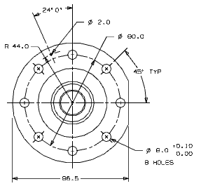

Add a perpendicular dimension, then adjust the dimension origins
-
Dimension the perpendicular distance of the flange cut-off along the horizontal centerline of the part to the tangency on the left.

Make sure that no tolerance value appears and that no text is appended to this dimension.
Tip
Reset the dimension dialog bar.
-
In the TOP view, move the origin of any dimension that is interfering with another dimension (perhaps the dimension on the very small hole).
